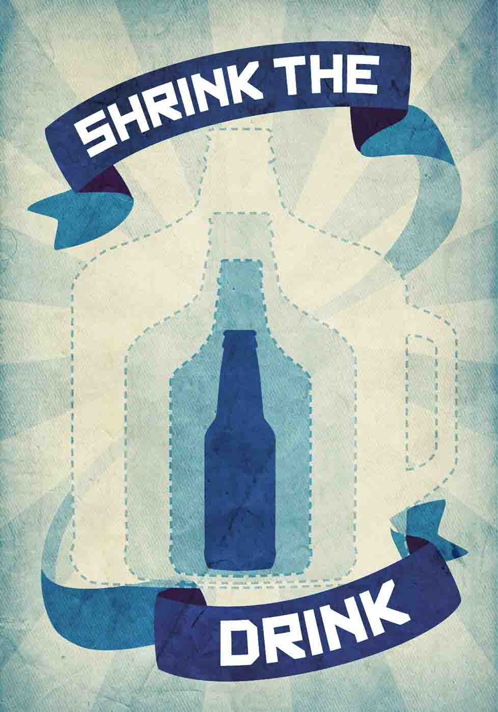

Shrink the Drink
If you drink alcohol, moderation is key. Alcohol overuse can increase your risk for cancer, pancreatitis, liver disease, high blood pressure, stroke, heart damage, accidental death, and suicide.
Try these tips to curb your alcohol intake:
- Use a smaller glass
- Substitute flavored seltzer or juice
- Check alcohol content and choose the lighter option
- Avoid drinks with ambiguous amounts of alcohol like punch and cocktails
- Choose activities that don’t involve drinking
